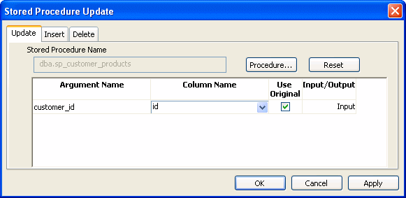

Updates to the database can be performed using stored procedures.
The DataWindow control submits updates to the database by dynamically generating INSERT, DELETE, and UPDATE SQL statements after determining the status of each row in the DataWindow object. You can also define procedural SQL statements in a stored procedure for use by all applications accessing a database. Using stored procedures to perform database updates allows you to enhance database security, integrity, and performance. Since stored procedures provide for conditional execution, you can also use them to enforce additional business rules.
The Stored Procedure Update dialog box only allows you to associate an existing stored procedure with your DataWindow object. The stored procedure must have been previously defined in the database.

 To use stored procedures to update the database
To use stored procedures to update the database
In the DataWindow painter, select Rows>Stored Procedure Update to display the Stored Procedure Update dialog box.
Select the tab for the SQL update method (Delete, Insert, or Update) with which you want to associate a stored procedure.
Click the Procedure button, select the stored procedure you want to have execute when the SQL update method is generated, and click OK.
The parameters used in the stored procedure are displayed in the Argument Name list in the order in which they are defined in the procedure. Column Name lists the columns used in your DataWindow object.
Associate a column in the DataWindow object or an expression with a procedure parameter.
If a stored procedure uses parameters that are not matched to column names, you can substitute the value from a DataWindow object computed field or expression.
 Matching a column to a procedure parameter You must be careful to correctly match a column in the DataWindow object
to a procedure parameter, since PowerBuilder is able to verify only that
datatypes match.
Matching a column to a procedure parameter You must be careful to correctly match a column in the DataWindow object
to a procedure parameter, since PowerBuilder is able to verify only that
datatypes match.
If the parameter is to receive a column value, indicate whether the parameter will receive the updated column value entered through the DataWindow object or retain the original column value from the database.
Typically, you select Use Original when the parameter is used in a WHERE clause in an UPDATE or DELETE SQL statement. If you do not select Use Original, the parameter will use the new value entered for that column. Typically, you would use the new value when the parameter is used in an INSERT or UPDATE SQL statement.
The stored procedure you associate with a SQL update method in the Stored Procedure Update dialog box is executed when the DataWindow control calls the Update method. The DataWindow control examines the table in the DataWindow object, determines the appropriate SQL statement for each row, and submits the appropriate stored procedure (as defined in the Stored Procedure Update dialog box) with the appropriate column values substituted for the procedure arguments.
If a stored procedure for a particular SQL update method is not defined, the DataWindow control submits the appropriate SQL syntax in the same manner it always has.
Return values from procedures cannot be handled by the DataWindow control. The Update method returns 1 if it succeeds and -1 if an error occurs. Additional information is returned to SQLCA.
You can use the DataWindow Describe and Modify methods to access DataWindow property values including the stored procedures associated with a DataWindow object. For information, see the DataWindow object property Table.property in the DataWindow Reference .
Since a database driver can only report stored procedure names and parameter names and position, it cannot verify that changes made to stored procedures are valid. Consequently, if you use Modify to change a stored procedure, be careful that you do not inadvertently introduce changes into the database.
In addition, using Modify to enable a DataWindow object to use stored procedures to update the database when it is not already using stored procedures requires that the type qualifier be specified first. Calling the type qualifier ensures that internal structures are built before subsequent calls to Modify. If a new method or method arguments are specified without a preceding definition of type, Modify fails.